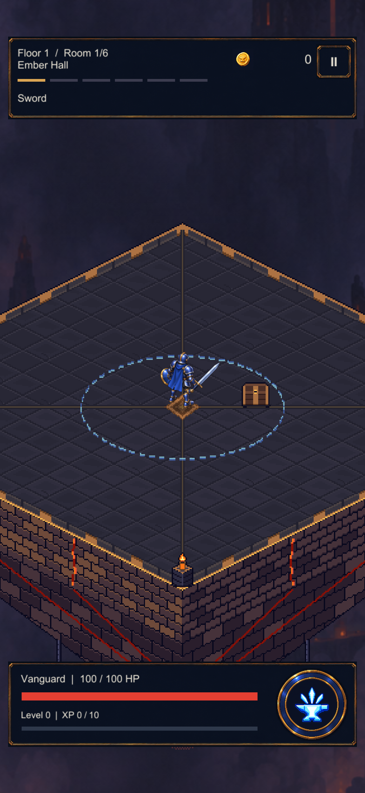
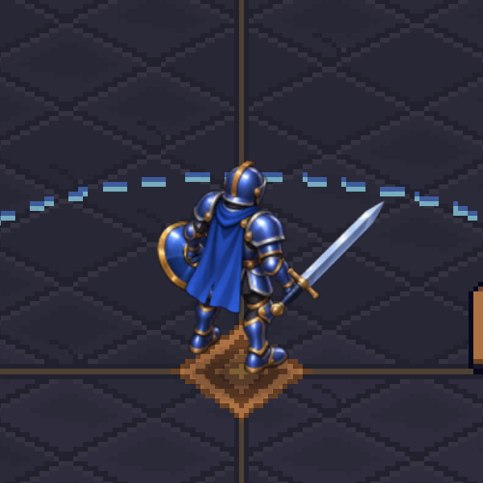

Fixed gameplay size · 128 PPU character · existing floor and HUD

Sword · idle
Frame playback for inspection; timing between captured frames is illustrative. Gameplay timing comes from movement and weapon events.
First integrated prototype: one rear facing. Foot contact, directional poses and finger occlusion still need polish. Staff, Daggers, enemies and effects retain the previous procedural artwork.